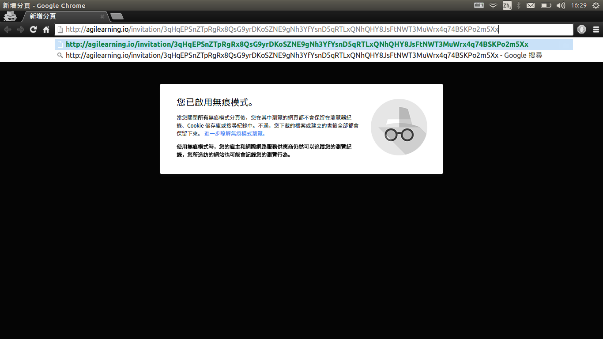
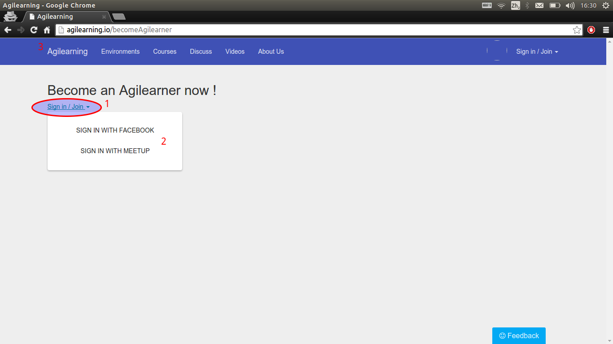
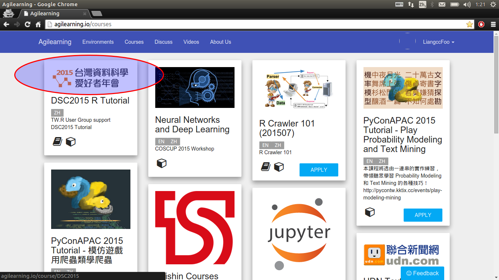
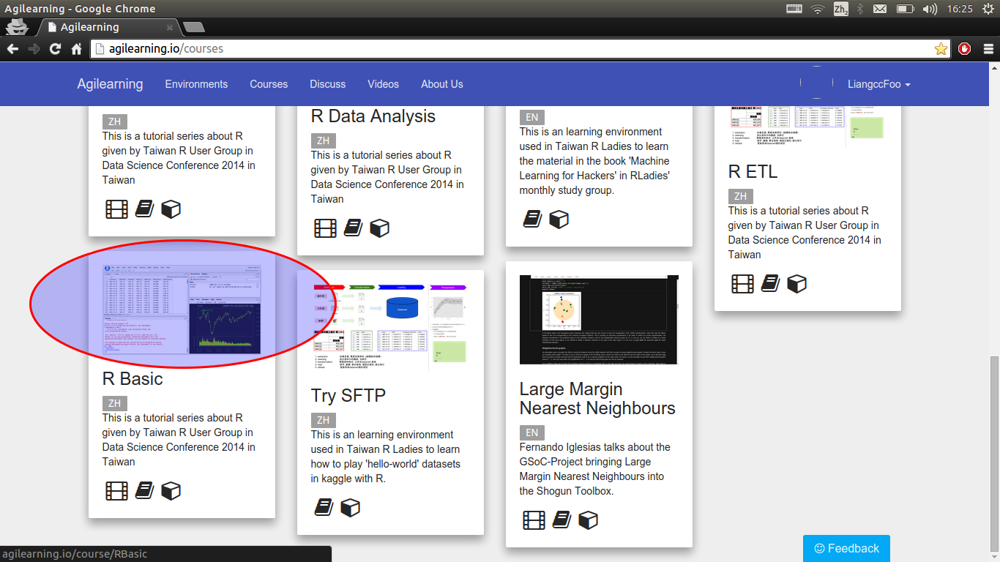
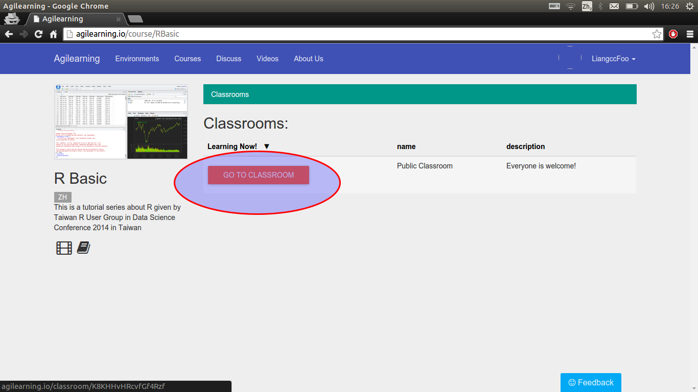
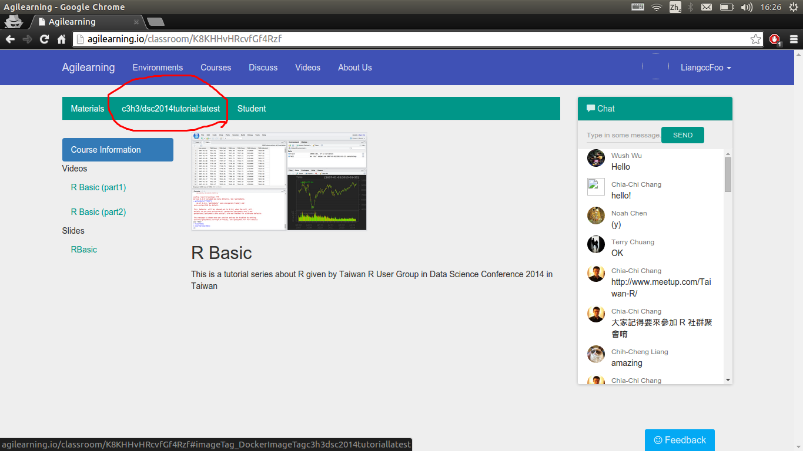
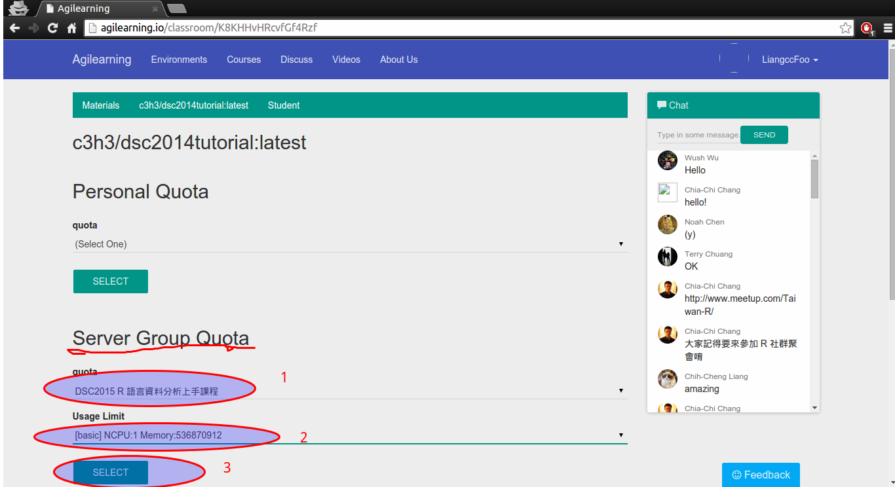
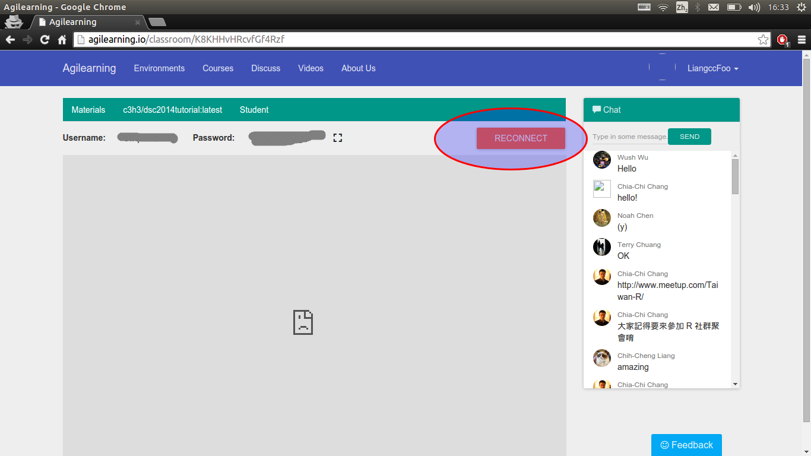
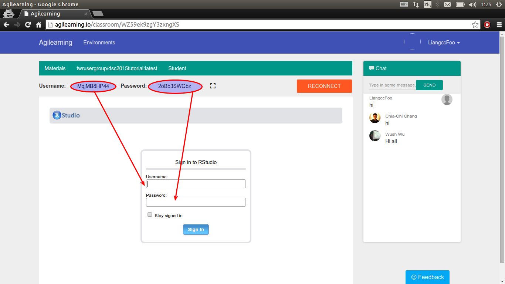
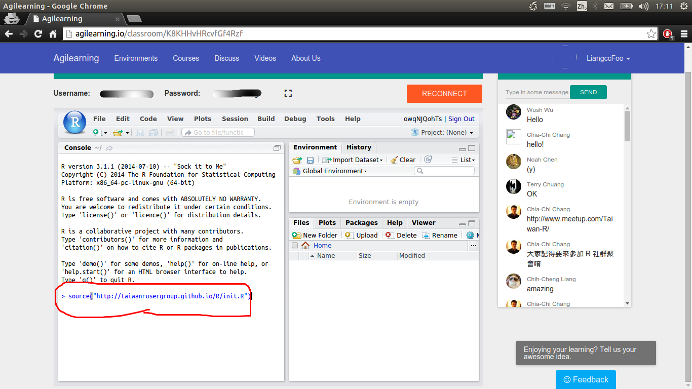

平台使用教學
- 在信箱中取得平台邀請碼。 
- 可選擇使用Facebook或Meetup登入。登入後點選Agilearning進入首頁。 
- 進入首頁後，看到一系列課程。請往下捲。 
- 選擇R Basic課程。
- 點選join classroom，再點 Go to classroom。
- 點選c3h3/dsc2014tutorial:latest。
- 在Server Group Quota選擇 「DSC 2015 R 語言資料分析上手課程」與[basic ...]，點選Select。
- 稍候片刻，應有灰色畫面跳出，選擇Reconnect。
- 輸入使用者名稱密碼，按Sign in。
- 在指令列輸入
source("http://taiwanrusergroup.github.io/R/init.R")並執行。套件安裝完成即可使用